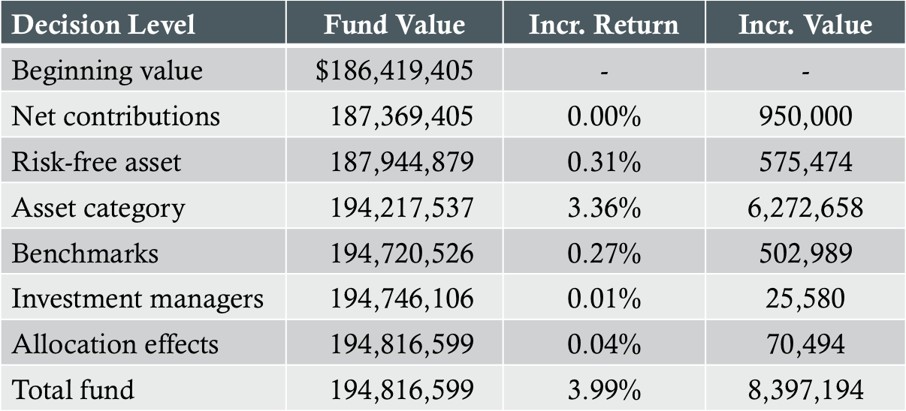
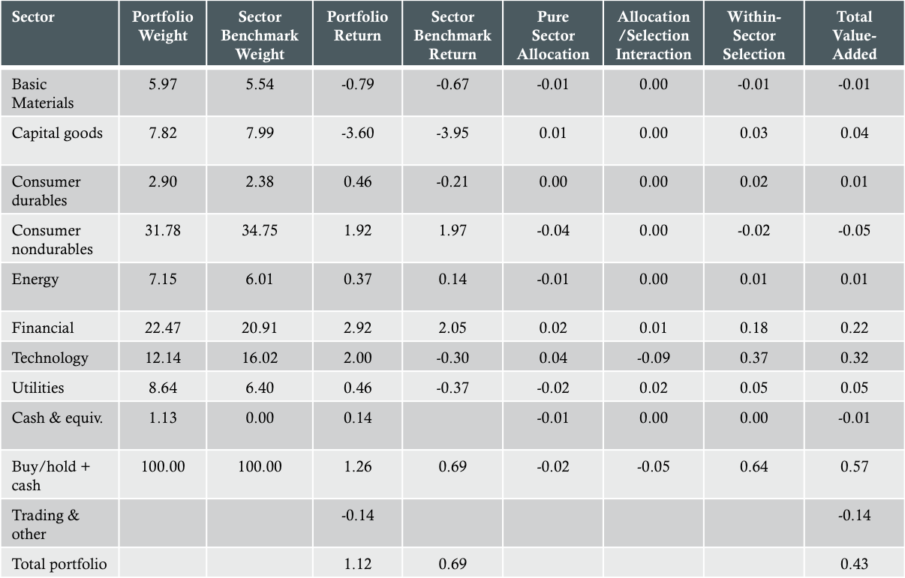

Introduction
- Measurement
- Attribution
- Appraisal
Performance Measurement
Definition: Procedure of calculating an account's returns
- rt=(MV1-MV0)/MV0 (assumes no external cash flows
- Total rate of return
- Time-weighted rate of return
- Chain-linking
- Wealth relative
- rtwr=(1+rt,1)(1+rt,2)...(1+rt,n)-1
- Money-weighted rate of return
- Internal rate of return (IRR)
- MV1=MV0(1+R)m+CF1(1+R)(m-L(1))+...+CFn(1+R)(m-L(n))
- Linked internal rate of return (LIRR)
- Annualized return
Benchmarks
- Portfolios have 3 components:
- Market, style, and active management
- Valid benchmarks are:
- Unambiguous, investable, measurable, appropriate, reflective of investment opinions, specified in advance, and owned
- Types of benchmarks
- Absolute, manager universe, broad market indices, style indices, factor-based models, returns-based models, and custom-security-based models
- Tests of quality
- Systematic biases, tracking error, risk characteristics, coverage, turnover, positive active positions
Performance Attribution
- Identification of differential returns
- Macro vs. micro attribution
- Impact = weight × return
Macro Attribution
Definition: Macro Attribution is the process of decomposing a fund's performance from a macro perspective
- Inputs
- Policy allocations
- Benchmark portfolio returns
- Fund returns, valuations, and external cash flows
Illustrative Macro Attribution Analysis

Micro Attribution
Definition: The process analyzing investment results of individual portfolios relative to designated benchmarks
Illustrative Micro Attribution Analysis

Performance Appraisal
- Alpha: RAt - rft = αA + βA(RMt - rft) + εt
- Treynor measure: TA = (RA - rf)/βA
- Sharpe ratio: SA = (RA - rf)/σA
- M2A = rf + [(RA - rf)/σA]σM
- Information ratio: IRA = (RA - RB)/σA-B